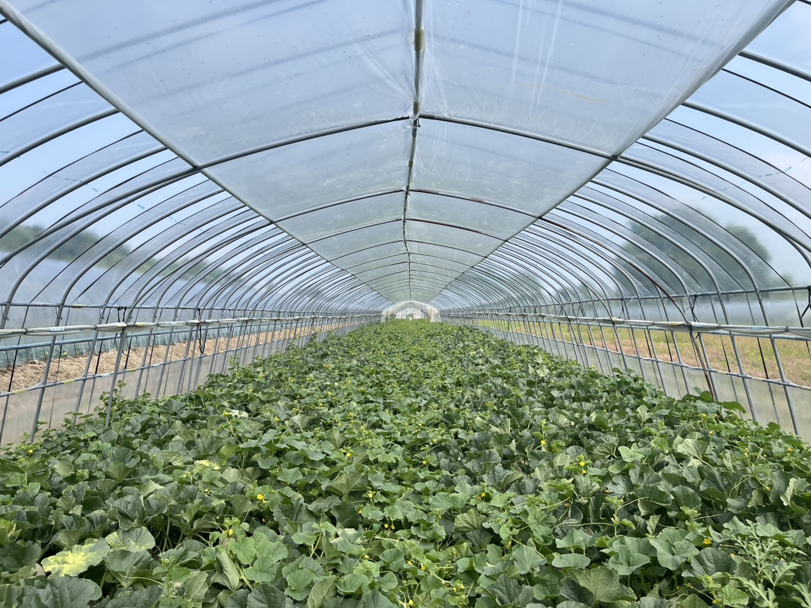
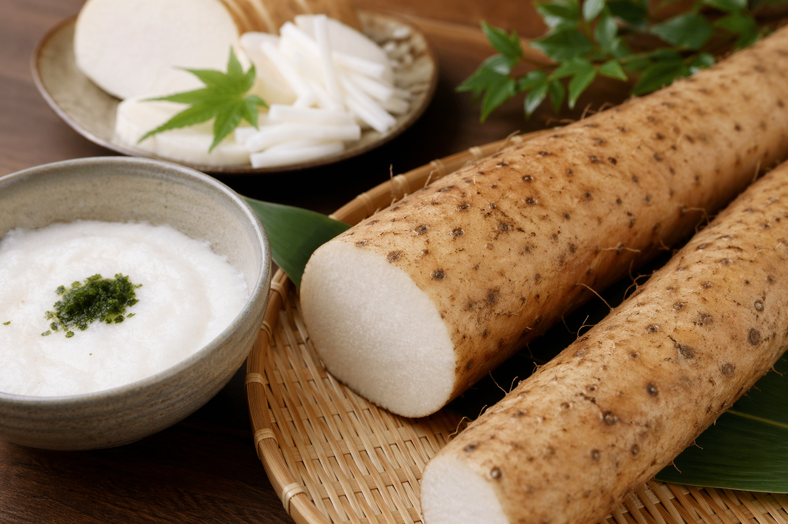
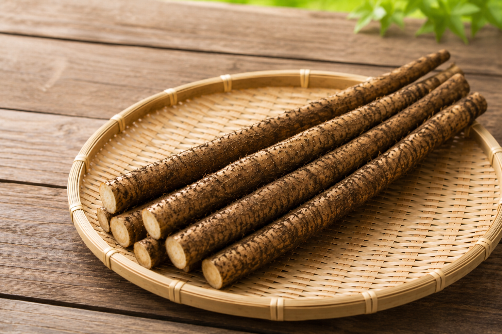
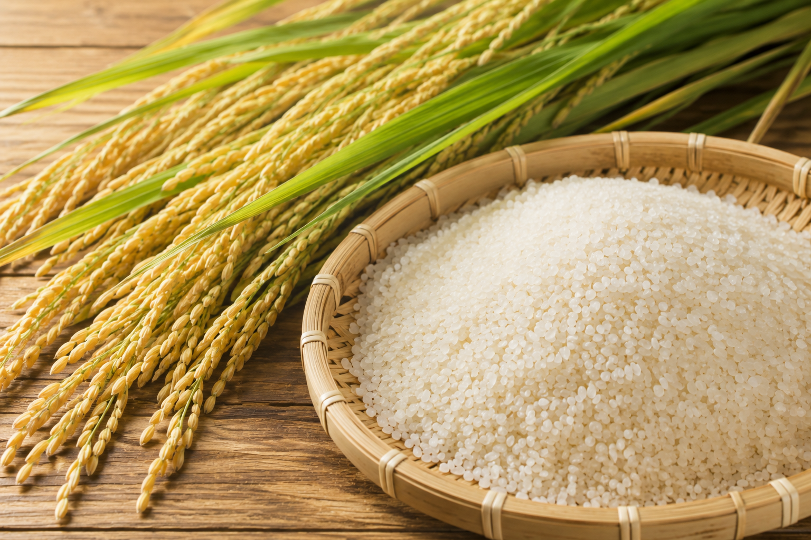
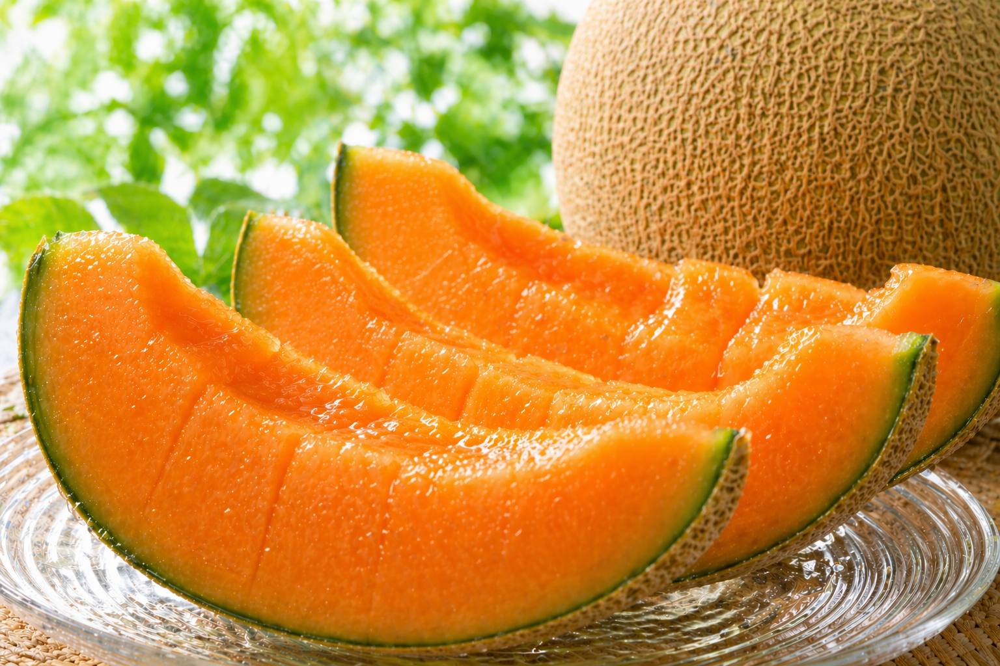

土の力を、そのまま食卓へ。
北海道の大地で育てた自慢の長芋・ごぼう・米を、ご家庭へ直接お届けします。
長芋を注文する菅原農園は北海道安平町で、長芋・ごぼう・米、そして赤肉メロンを育てています。 素材の力を引き出すことを大切に、北海道の豊かな土壌と気候を活かした栽培を心がけています。
特に長芋は粘り気が強く、濃厚な味わいが特徴です。 一度食べていただいたお客様からは「他の長芋とは全然違う」と喜んでいただいています。
当園の長芋・ごぼう・米は、これまで企業様のご利用として長年お届けしてきた実績があります。 このたび、ご家庭にも直接お届けしたいという思いから、オンラインでの販売を始めました。


長芋
11月〜 オンライン注文受付粘り気が強く、濃厚な味わい。一度食べたらやみつきになると評判の長芋です。 このページの注文フォームからご注文いただけます。

ごぼう
秋〜冬北海道の大地でじっくり育てたごぼう。香りが豊かで、煮物やきんぴらに最適です。 オンライン販売を準備中です。ご希望の方はメールにてお問い合わせください。

米
秋収穫北海道の澄んだ空気と水で育てたお米。もちもちとした食感が自慢です。 オンライン販売を準備中です。ご希望の方はメールにてお問い合わせください。

赤肉メロン
6月〜9月 季節限定北海道育ちの赤肉メロン。芳醇な香りと深い甘みで、毎年多くのリピーターの お客様にご好評いただいています。ご注文はメールにて。
長芋 1箱（10kg・約10〜14本）
4,000円（税込）
※ 長芋の本数は大きさによって異なります（10kgあたり約10〜14本が目安です）。
※ 送料は別途かかります：北海道内 900円／北海道外（沖縄・離島以外） 1,900円
※ 沖縄・離島、または複数箱のご注文など送料が変わる場合は、ご注文後の確認メールにてご案内いたします。
〒059-1505
北海道勇払郡安平町追分旭723
FAX：0145-25-4073
※ お問い合わせへの返信は2〜3営業日以内を目安にしております。